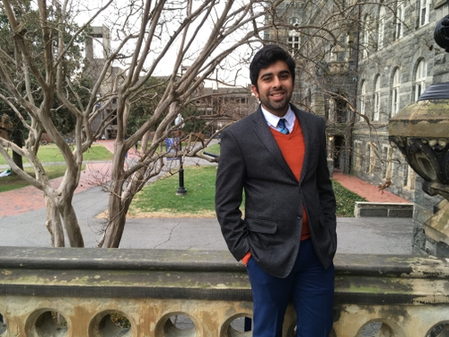
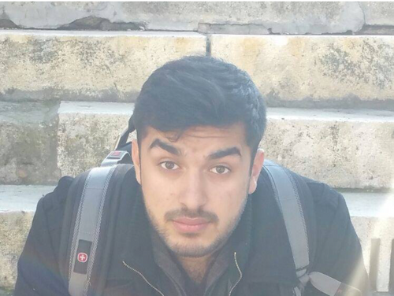

Anton Smaliak is a member of Georgetown's Class of 2018 and is excited to chair the United Nations Security Council at NCSC this year

Anton Smaliak

Harsh Thakkar
Harsh Thakkar is a rising senior in the Walsh School of Foreign Service majoring in International Politics, and has an illustrious side-career as a DJ. When he’s not in class, Harsh can probably be found planning trips back to Ahmedabad, India, where he was born, or spending extended periods of time procrastinating on Reddit.

Saad Bashir
Saad Bashir is a member of the Georgetown University Class of 2019, currently as a major in Political Economy and minor in Lingustics. Originally born in Panama City, Florida, Saad has lived out most of his life in Athens, Georgia where he was active in everything from local politics to mixed martial arts. Now at Georgetown University, he is an active member of the Georgetown Model UN travel team and has staffed NCSC twice. He has also been on the secretariat for Georgetown's high school conference, NAIMUN. Usually, you can find Saad awake at 4 am not doing his work and pretending to be productive.